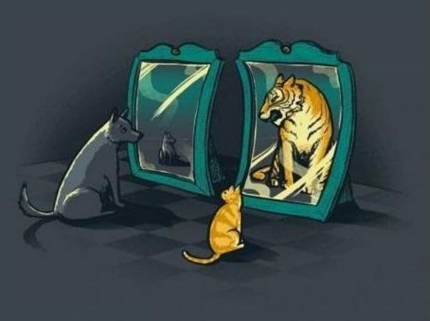
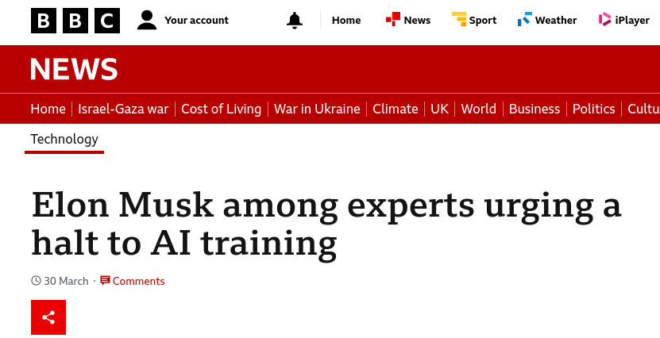
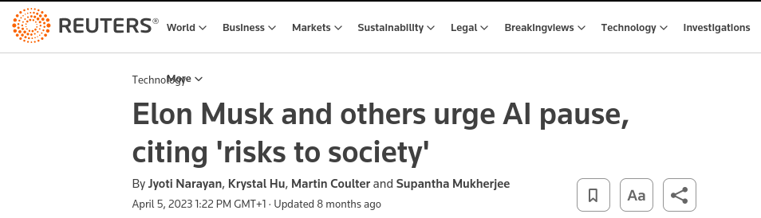
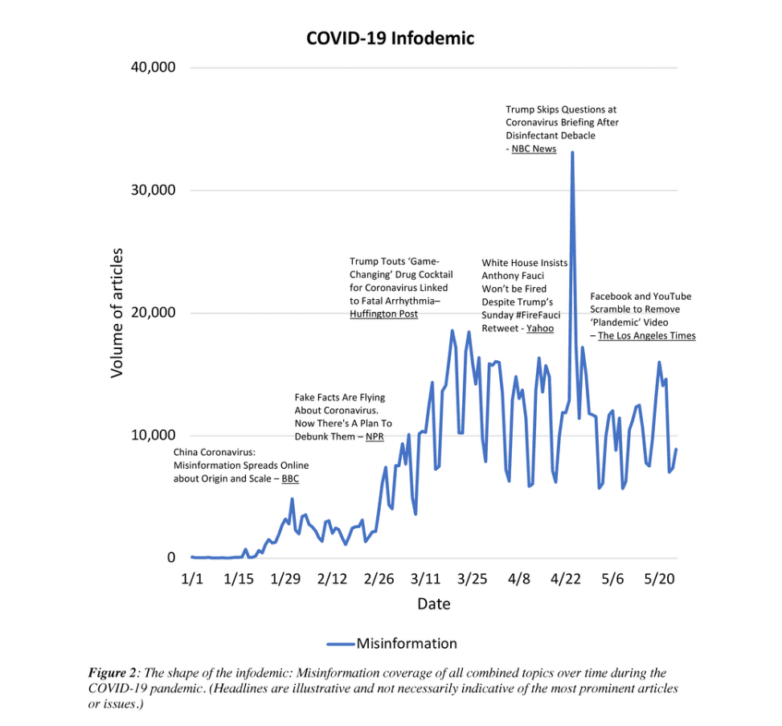
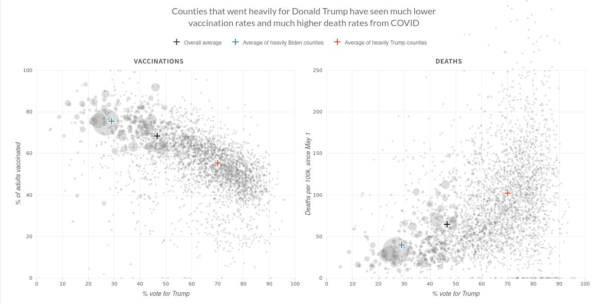
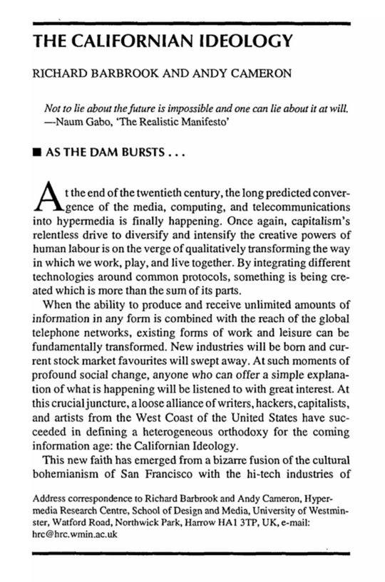
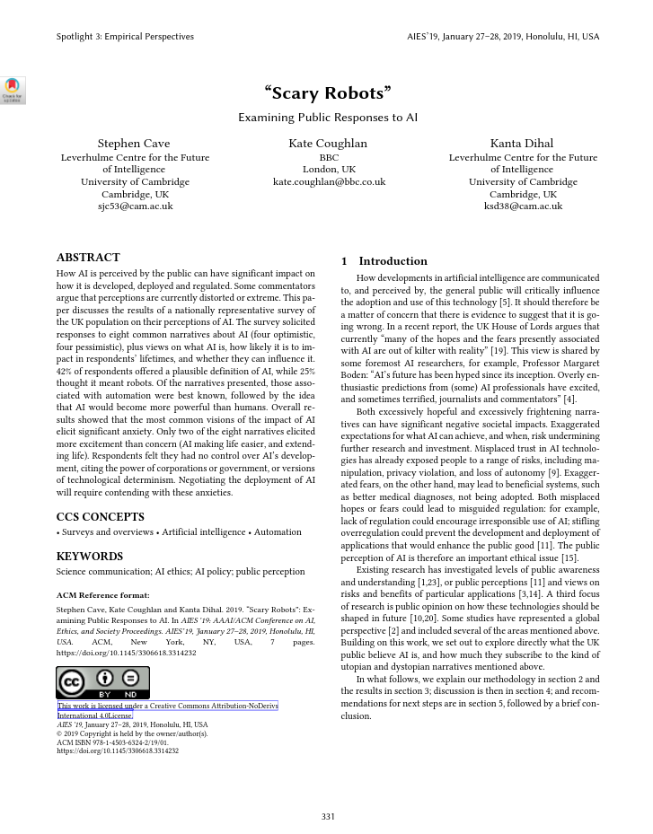
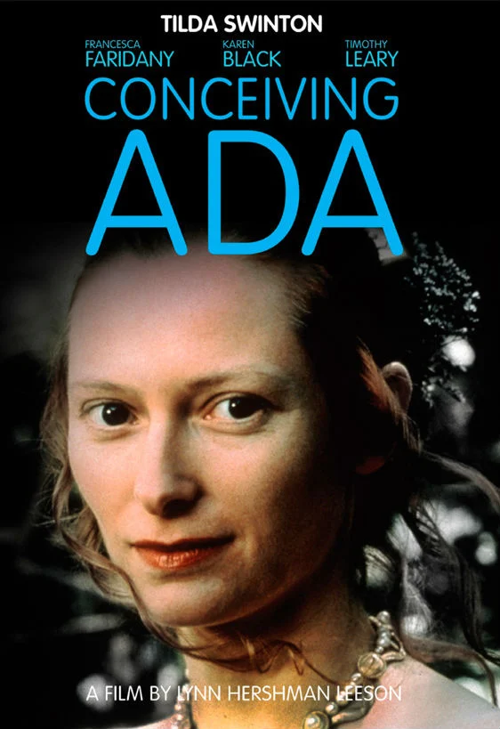
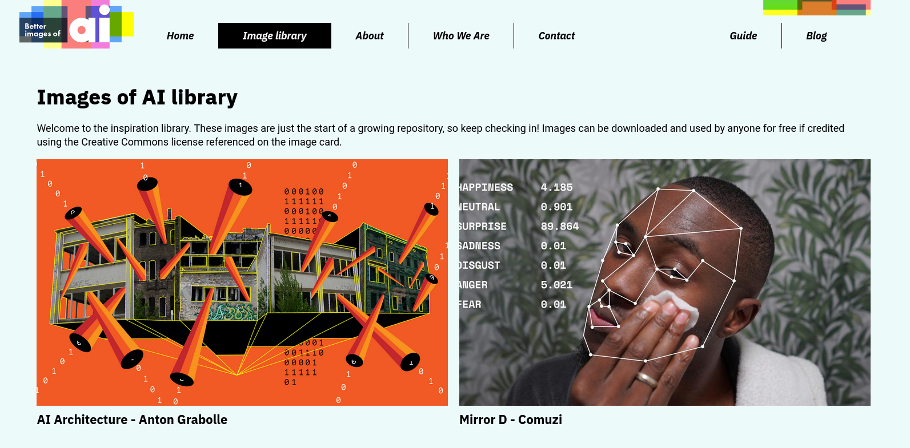
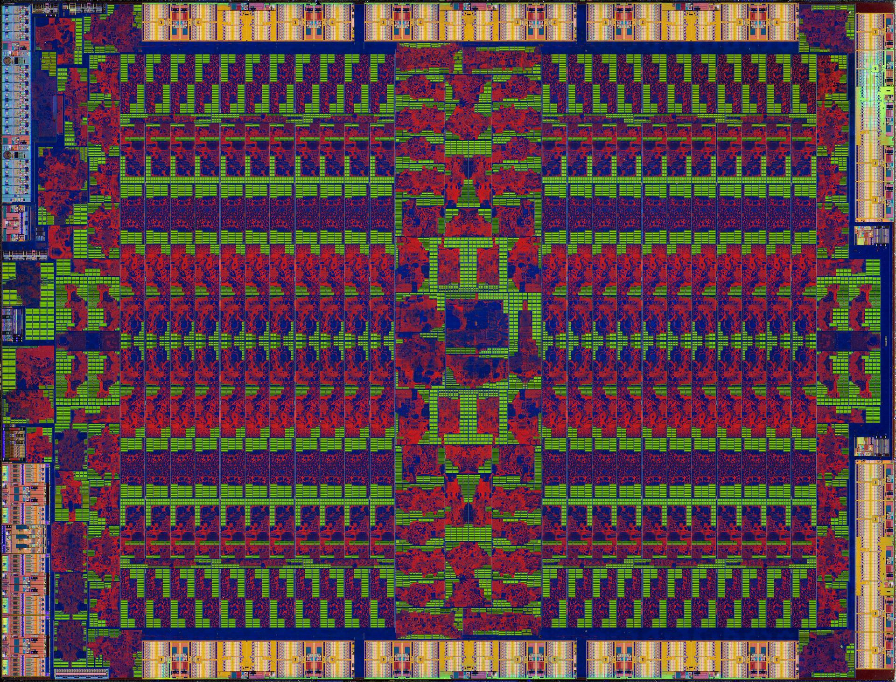

<!DOCTYPE html>
<html lang="en">
  <head>
    <meta charset="utf-8" />
    <meta name="viewport" content="width=device-width, initial-scale=1.0, maximum-scale=1.0, user-scalable=no" />

    <title>AI Narratives</title>
    <link rel="stylesheet" href="dist/reveal.css" />
    <link rel="stylesheet" href="dist/theme/black.css" id="theme" />
    <link rel="stylesheet" href="plugin/highlight/zenburn.css" />
	<link rel="stylesheet" href="css/layout.css" />
	<link rel="stylesheet" href="plugin/customcontrols/style.css">
	<link rel="stylesheet" href="plugin/chalkboard/style.css">

	<link rel="stylesheet" href="plugin/reveal-pointer/pointer.css" />


    <script defer src="dist/fontawesome/all.min.js"></script>

	<script type="text/javascript">
		var forgetPop = true;
		function onPopState(event) {
			if(forgetPop){
				forgetPop = false;
			} else {
				parent.postMessage(event.target.location.href, "app://obsidian.md");
			}
        }
		window.onpopstate = onPopState;
		window.onmessage = event => {
			if(event.data == "reload"){
				window.document.location.reload();
			}
			forgetPop = true;
		}

		function fitElements(){
			const itemsToFit = document.getElementsByClassName('fitText');
			for (const item in itemsToFit) {
				if (Object.hasOwnProperty.call(itemsToFit, item)) {
					var element = itemsToFit[item];
					fitElement(element,1, 1000);
					element.classList.remove('fitText');
				}
			}
		}

		function fitElement(element, start, end){

			let size = (end + start) / 2;
			element.style.fontSize = `${size}px`;

			if(Math.abs(start - end) < 1){
				while(element.scrollHeight > element.offsetHeight){
					size--;
					element.style.fontSize = `${size}px`;
				}
				return;
			}

			if(element.scrollHeight > element.offsetHeight){
				fitElement(element, start, size);
			} else {
				fitElement(element, size, end);
			}		
		}


		document.onreadystatechange = () => {
			fitElements();
			if (document.readyState === 'complete') {
				if (window.location.href.indexOf("?export") != -1){
					parent.postMessage(event.target.location.href, "app://obsidian.md");
				}
				if (window.location.href.indexOf("print-pdf") != -1){
					let stateCheck = setInterval(() => {
						clearInterval(stateCheck);
						window.print();
					}, 250);
				}
			}
	};


        </script>
  </head>
  <body>
    <div class="reveal">
      <div class="slides"><section  data-markdown><script type="text/template"><!-- .slide: class="drop" -->
<div class="" style="position: absolute; left: 0px; top: 0px; height: 1199px; width: 1920px; min-height: 1199px; display: flex; flex-direction: column; align-items: center; justify-content: center" absolute="true">

# AI Narratives
## AI & Society ― week 11


[Dr Daniel Chávez Heras](https://movingpixel.net/)

[6AAVC307](https://keats.kcl.ac.uk/course/view.php?id=110858) | [7AAVCD42](https://keats.kcl.ac.uk/course/view.php?id=108767)

2023-24
</div>

<aside class="notes"><p>This week we focus on the stories we and other tell about AI, and why they matter, even (or especially) when, they are wrong. We take a closer look at how AI has become part of the global economy, and how it is developing in other parts of the world, including examples of how it threatens democracy and stability in various parts of the world like Africa or Latin America.</p>
</aside></script></section><section  data-markdown><script type="text/template"><!-- .slide: class="has-dark-background drop" data-background-color="#2b1804" -->
<div class="" style="position: absolute; left: 0px; top: 0px; height: 1199px; width: 1920px; min-height: 1199px; display: flex; flex-direction: column; align-items: center; justify-content: center" absolute="true">

# The road ahead
<div class="callout callout-color8">
<div class="callout-title">
<div class="callout-icon">

<i class="fas fa-list" ></i>


</div>
<div class="callout-title-inner">

In today's lecture:  

</div>
</div>
<div class="callout-content">

1. The stories we tell

2. Hopes and fears

3. Anthropomorphisation

4. Alternative stories

5. Final assignment

6. Questions

</div>
</div>
</div></script></section><section  data-markdown><script type="text/template"><!-- .slide: class="has-dark-background drop" data-background-color="#304f5e" -->
<div class="" style="position: absolute; left: 0px; top: 0px; height: 1199px; width: 1920px; min-height: 1199px; display: flex; flex-direction: column; align-items: center; justify-content: center" absolute="true">

# 1. The stories we tell...
## ...and why they matter

<i class="fas fa-comments fa-4x" ></i>
</div></script></section><section  data-markdown><script type="text/template"><!-- .slide: class="drop" -->
<div class="" style="position: absolute; left: 0px; top: 0px; height: 1199px; width: 1920px; min-height: 1199px; display: flex; flex-direction: column; align-items: center; justify-content: center" absolute="true">

# The fabric of the real




1. We have beliefs about the world
2. We act according to those beliefs
3. Beliefs are influenced by the stories we tell (to ourselves and to others)
4. Stories are deeply connected to how we act upon the world
</div>

<aside class="notes"><p>People&#39;s beliefs can be based on incomplete or incorrect information, ideologically skewed, factually incorrect.</p>
</aside></script></section><section  data-markdown><script type="text/template"><!-- .slide: class="drop" -->
<div class="" style="position: absolute; left: 0px; top: 0px; height: 1199px; width: 1920px; min-height: 1199px; display: flex; flex-direction: column; align-items: center; justify-content: center" absolute="true">

## AI narratives matter
</div>

<aside class="notes"><p>much more so than you might initially imagine.</p>
</aside></script></section><section  data-markdown><script type="text/template"><!-- .slide: class="drop" -->
<div class="" style="position: absolute; left: 0px; top: 0px; height: 1199px; width: 1920px; min-height: 1199px; display: flex; flex-direction: column; align-items: center; justify-content: center" absolute="true">

<i class="fas fa-quote-left fa-2x" ></i>


>Popular excitement and concerns about an emerging technology <mark>influence public and policy debates</mark>, and shape the cost- (or risk-) benefit analysis publics make about that technology.

<i class="fas fa-quote-right fa-2x" ></i>


\- Portrayals and perceptions of AI report
</div>

<aside class="notes"><p>Brit GPT</p>
</aside></script></section><section  data-markdown><script type="text/template"><!-- .slide: class="drop" -->
<div class="" style="position: absolute; left: 0px; top: 0px; height: 1199px; width: 1920px; min-height: 1199px; display: flex; flex-direction: column; align-items: center; justify-content: center" absolute="true">

<i class="fas fa-quote-left fa-2x" ></i>


>Technology can be <mark>a lightning rod for broader social narratives or concerns</mark>, which can draw debate away from the actual risks and benefits of a technology. 

<i class="fas fa-quote-right fa-2x" ></i>


\- Portrayals and perceptions of AI report
</div>

<aside class="notes"><p>who benefits and who is at risk</p>
</aside></script></section><section  data-markdown><script type="text/template"><!-- .slide: class="drop" -->
<div class="" style="position: absolute; left: 0px; top: 0px; height: 1199px; width: 1920px; min-height: 1199px; display: flex; flex-direction: column; align-items: center; justify-content: center" absolute="true">

<i class="fas fa-quote-left fa-2x" ></i>


>The reception of a technology can be shaped by perceptions of <mark>who benefits and who is at risk</mark> from technological developments.

<i class="fas fa-quote-right fa-2x" ></i>


\- Portrayals and perceptions of AI report
</div></script></section><section  data-markdown><script type="text/template"><!-- .slide: class="drop" -->
<div class="" style="position: absolute; left: 0px; top: 0px; height: 1199px; width: 1920px; min-height: 1199px; display: flex; flex-direction: column; align-items: center; justify-content: center" absolute="true">





</div>

<aside class="notes"><p>The Future of Life institute, the thinktank that coordinated the effort, cited 12 pieces of research from experts including university academics as well as current and former employees of OpenAI, Google and its subsidiary DeepMind. </p>
<p>Critics have accused the Future of Life Institute (FLI), which has received funding from the Musk foundation, of prioritising imagined apocalyptic scenarios over more immediate concerns about AI – such as racist or sexist biases being programmed into the machines.</p>
</aside></script></section><section  data-markdown><script type="text/template"><!-- .slide: class="drop" -->
<div class="" style="position: absolute; left: 0px; top: 0px; height: 1199px; width: 1920px; min-height: 1199px; display: flex; flex-direction: column; align-items: center; justify-content: center" absolute="true">

<i class="fas fa-quote-left fa-2x" ></i>


>The level of <mark>public trust</mark> in scientists and technologists influences the perception
and reception of new technologies.

<i class="fas fa-quote-right fa-2x" ></i>


\- Portrayals and perceptions of AI report
</div></script></section><section  data-markdown><script type="text/template"><!-- .slide: class="drop" -->
<div class="" style="position: absolute; left: 0px; top: 0px; height: 1199px; width: 1920px; min-height: 1199px; display: flex; flex-direction: column; align-items: center; justify-content: center" absolute="true">


</div></script></section><section  data-markdown><script type="text/template"><!-- .slide: class="drop" -->
<div class="" style="position: absolute; left: 0px; top: 0px; height: 1199px; width: 1920px; min-height: 1199px; display: flex; flex-direction: column; align-items: center; justify-content: center" absolute="true">



Source: Evanega, S., Lynas, M., Adams, J., Smolenyak, K. and Insights, C.G., 2020. Coronavirus misinformation: quantifying sources and themes in the COVID-19 ‘infodemic’. _JMIR Preprints_, _19_(10), p.2020.

notes:
Alternative facts, fake news, misleading information: questioning efficacy of masks, touting miracle cures, etc.
</div></script></section><section  data-markdown><script type="text/template"><!-- .slide: class="drop" -->
<div class="" style="position: absolute; left: 0px; top: 0px; height: 1199px; width: 1920px; min-height: 1199px; display: flex; flex-direction: column; align-items: center; justify-content: center" absolute="true">



source: [NPR research](https://www.npr.org/sections/health-shots/2021/12/05/1059828993/data-vaccine-misinformation-trump-counties-covid-death-rate)
</div>

<aside class="notes"><p>misinformation kills</p>
</aside></script></section><section  data-markdown><script type="text/template"><!-- .slide: class="drop" -->
<div class="" style="position: absolute; left: 0px; top: 0px; height: 1199px; width: 1920px; min-height: 1199px; display: flex; flex-direction: column; align-items: center; justify-content: center" absolute="true">

<i class="fas fa-quote-left fa-2x" ></i>


>The <mark>language</mark> used to communicate scientific research is influential and terminology has different meanings and effects in different communities.

<i class="fas fa-quote-right fa-2x" ></i>


\- Portrayals and perceptions of AI report
</div></script></section><section  data-markdown><script type="text/template"><!-- .slide: class="drop" -->
<div class="" style="position: absolute; left: 0px; top: 0px; height: 1199px; width: 1920px; min-height: 1199px; display: flex; flex-direction: column; align-items: center; justify-content: center" absolute="true">

## New meanings for existing language

- Neural networks
- Hallucinations
- (machine) Learning
</div></script></section><section  data-markdown><script type="text/template"><!-- .slide: class="has-dark-background drop" data-background-color="#304f5e" -->
<div class="" style="position: absolute; left: 0px; top: 0px; height: 1199px; width: 1920px; min-height: 1199px; display: flex; flex-direction: column; align-items: center; justify-content: center" absolute="true">

# 2. Hopes and Fears
## Utopia and Dystopia

<i class="fas fa-theater-masks fa-4x" ></i>
</div></script></section><section  data-markdown><script type="text/template"><!-- .slide: class="drop" -->
<div class="" style="position: absolute; left: 0px; top: 0px; height: 1199px; width: 1920px; min-height: 1199px; display: flex; flex-direction: column; align-items: center; justify-content: center" absolute="true">


- Hyper-intelligence
- Curing disease
- Freeing humans from having to work
- Gratifying every human desire
- Making the world a safer place
- "Solving" death
</div>

<aside class="notes"><p>e.g. AGI
Humanoid robots, glowing brains, outstretched robot hands, or...
Silicon valley utopianism, or the Californian ideology.
Technological determinism.</p>
</aside></script></section><section  data-markdown><script type="text/template"><!-- .slide: class="drop" -->
<div class="" style="position: absolute; left: 0px; top: 0px; height: 1199px; width: 1920px; min-height: 1199px; display: flex; flex-direction: column; align-items: center; justify-content: center" absolute="true">



Richard Barbrook & Andy Cameron (1996) The Californian ideology, Science as Culture, 6:1, 44-72, DOI: [10.1080/09505439609526455](https://doi.org/10.1080/09505439609526455)
</div>

<aside class="notes"><p>A paradoxical hybridization of beliefs from the political left and right in the form of hopeful technological determinism.</p>
</aside></script></section><section  data-markdown><script type="text/template"><!-- .slide: class="drop" -->
<div class="" style="position: absolute; left: 0px; top: 0px; height: 1199px; width: 1920px; min-height: 1199px; display: flex; flex-direction: column; align-items: center; justify-content: center" absolute="true">


- Loosing our humanity
- Making humans obsolete
- Total alienation
- Enslavement by machines
- Extinction
</div>

<aside class="notes"><p>The terminator.
Decades if not centuries away, or never going to happen.
A tiny subset of a sub-field that gets blown out of proportion</p>
</aside></script></section><section  data-markdown><script type="text/template"><!-- .slide: class="drop" -->
<div class="" style="position: absolute; left: 0px; top: 0px; height: 1199px; width: 1920px; min-height: 1199px; display: flex; flex-direction: column; align-items: center; justify-content: center" absolute="true">



Stephen Cave, Kate Coughlan, and Kanta Dihal. 2019. "Scary Robots": Examining Public Responses to AI. In Proceedings of the 2019 AAAI/ACM Conference on AI, Ethics, and Society (AIES '19). Association for Computing Machinery, New York, NY, USA, 331–337. https://doi.org/10.1145/3306618.3314232
</div></script></section><section  data-markdown><script type="text/template"><!-- .slide: class="has-dark-background drop" data-background-color="#304f5e" -->
<div class="" style="position: absolute; left: 0px; top: 0px; height: 1199px; width: 1920px; min-height: 1199px; display: flex; flex-direction: column; align-items: center; justify-content: center" absolute="true">

# 3. Anthropomorphisation
## All too human non-humans

<i class="fas fa-robot fa-4x" ></i>
</div></script></section><section  data-markdown><script type="text/template"><!-- .slide: class="drop" -->
<div class="" style="position: absolute; left: 0px; top: 0px; height: 1199px; width: 1920px; min-height: 1199px; display: flex; flex-direction: column; align-items: center; justify-content: center" absolute="true">


</div>

<aside class="notes"><p>Aassumptions about gender, ethnicity and religion. They set unrealistic expectations and misrepresentation of the possibilities and limitations of AI.</p>
</aside></script></section><section  data-markdown><script type="text/template"><!-- .slide: class="drop" -->
<div class="" style="position: absolute; left: 0px; top: 0px; height: 1199px; width: 1920px; min-height: 1199px; display: flex; flex-direction: column; align-items: center; justify-content: center" absolute="true">


</div>

<aside class="notes"><p>As a result, these robots are gendered, hypermasculine killing machines, like the Terminator ―Arnols Swarzenegger
Sexualised conventionally beautiful women like Ava in Ex-Machina ―Alicia Vikander</p>
</aside></script></section><section  data-markdown><script type="text/template"><!-- .slide: class="drop" -->
<div class="" style="position: absolute; left: 0px; top: 0px; height: 1199px; width: 1920px; min-height: 1199px; display: flex; flex-direction: column; align-items: center; justify-content: center" absolute="true">

## Machines that look like (some) of us:

1. Humans are the most <mark>intelligent creatures</mark>
2. Visual story telling relies on <mark>characters with bodies</mark>
</div>

<aside class="notes"><p>More difficult to have a character being a collective, or a non physical entity, a virus, or a planet
Other intelligent creatures ara available, like the octopus</p>
</aside></script></section><section  data-markdown><script type="text/template"><!-- .slide: class="drop" -->
<div class="" style="position: absolute; left: 0px; top: 0px; height: 1199px; width: 1920px; min-height: 1199px; display: flex; flex-direction: column; align-items: center; justify-content: center" absolute="true">


The transported man trick in _The Prestige_ (2006)

_Spectacular machinery and encrypted spectatorship_

[https://doi.org/10.7146/aprja.v8i1.115423](https://doi.org/10.7146/aprja.v8i1.115423)
</div>

<aside class="notes"><p>For more, read my article</p>
</aside></script></section><section  data-markdown><script type="text/template"><!-- .slide: class="has-dark-background drop" data-background-color="#304f5e" -->
<div class="" style="position: absolute; left: 0px; top: 0px; height: 1199px; width: 1920px; min-height: 1199px; display: flex; flex-direction: column; align-items: center; justify-content: center" absolute="true">

# 4. Counter narratives
## other stories are available

<i class="fas fa-exchange-alt fa-4x" ></i>
</div></script></section><section  data-markdown><script type="text/template"><!-- .slide: class="drop" -->
<div class="" style="position: absolute; left: 0px; top: 0px; height: 1199px; width: 1920px; min-height: 1199px; display: flex; flex-direction: column; align-items: center; justify-content: center" absolute="true">

## In popular culture

<split even gap=2>




</split>
</div>

<aside class="notes"><p>Counter-narratives can be found in less prevalent AI fictions. For instance, the 1997 film Conceiving Ada directed by Lynn Hershman Leeson provides a social
commentary on the relationship between people and technology. In this film, the AI researcher is female, played by Tilda Swinton; moreover, the AI is embodied
as a dog and as a bird, instead of in human form. The film is unusual in using AI to reframe the way in which historically significant events are described in order to
highlight the roles and perspectives of women. M. John Harrison’s Kefahuchi Tract trilogy of novels offers radical imaginings of human intimacy with algorithms, code and mathematics. Such narratives offer necessarily different perspectives on the power dynamics of AI, gender and embodiment.</p>
</aside></script></section><section  data-markdown><script type="text/template"><!-- .slide: class="drop" -->
<div class="" style="position: absolute; left: 0px; top: 0px; height: 1199px; width: 1920px; min-height: 1199px; display: flex; flex-direction: column; align-items: center; justify-content: center" absolute="true">

## In research

- Global AI narratives
- Analysis of media coverage
- Quantitative analysis of SciFi influence
- Narrative case studies
- Meta studies on research agendas ―who is funding AI research?
- Other images of AI
</div></script></section><section  data-markdown><script type="text/template"><!-- .slide: class="drop" -->
<div class="" style="position: absolute; left: 0px; top: 0px; height: 1199px; width: 1920px; min-height: 1199px; display: flex; flex-direction: column; align-items: center; justify-content: center" absolute="true">


</div>

<aside class="notes"><p>&quot;Better Images of AI&quot; is a non-profit collaboration of various individuals, non-profit and academic institutions in the UK, e.g. BBC R&amp;D, the Ada Lovelace Institute, and a charity organisation called We and AI.</p>
</aside></script></section><section  data-markdown><script type="text/template"><!-- .slide: class="drop" -->
<div class="" style="position: absolute; left: 0px; top: 0px; height: 1199px; width: 1920px; min-height: 1199px; display: flex; flex-direction: column; align-items: center; justify-content: center" absolute="true">


<span>Image by <a href="https://alanwarburton.co.uk/">Alan Warburton</a> / © BBC / <a href="https://www.betterimagesofai.org">Better Images of AI</a> / Virtual Human / <a href="https://creativecommons.org/licenses/by/4.0/">Licenced by CC-BY 4.0</a></span>
</div>

<aside class="notes"><p>Refracted version of ourselves. Refraction is when a weave changes direction and shape as it passes from one medium to another. In optics this often refers to how light is bent and reshaped as it goes through different lenses. Controlling the shape of light through optical lenses is one of the key principles of photography. 
What we now think of as AI is built on top photographic images.</p>
<p>In a wider sense: AI creates multiple refractions of culture; multiple versions of events, and observations that are brought together to form a coherent whole.</p>
</aside></script></section><section  data-markdown><script type="text/template"><!-- .slide: class="drop" -->
<div class="" style="position: absolute; left: 0px; top: 0px; height: 1199px; width: 1920px; min-height: 1199px; display: flex; flex-direction: column; align-items: center; justify-content: center" absolute="true">


<span><a href="https://www.behance.net/maxgruber2">Max Gruber</a> / <a href="https://www.betterimagesofai.org">Better Images of AI</a> / Ceci n'est pas une banane / <a href="https://creativecommons.org/licenses/by/4.0/">Licenced by CC-BY 4.0</a></span>
</div></script></section><section  data-markdown><script type="text/template"><!-- .slide: class="drop" -->
<div class="" style="position: absolute; left: 0px; top: 0px; height: 1199px; width: 1920px; min-height: 1199px; display: flex; flex-direction: column; align-items: center; justify-content: center" absolute="true">


<span><a href="https://www.bbc.co.uk/rd">David Man & Tristan Ferne</a> / <a href="https://www.betterimagesofai.org">Better Images of AI</a> / Trees / <a href="https://creativecommons.org/licenses/by/4.0/">Licenced by CC-BY 4.0</a></span>
</div></script></section><section  data-markdown><script type="text/template"><!-- .slide: class="drop" -->
<div class="" style="position: absolute; left: 0px; top: 0px; height: 1199px; width: 1920px; min-height: 1199px; display: flex; flex-direction: column; align-items: center; justify-content: center" absolute="true">



<span><a href="https://www.flickr.com/photos/130561288@N04/">Fritzchens Fritz</a> / <a href="https://www.betterimagesofai.org">Better Images of AI</a> / GPU shot etched 1 / <a href="https://creativecommons.org/licenses/by/4.0/">Licenced by CC-BY 4.0</a></span>
</div>

<aside class="notes"><p>These photographs are known as “die-shots“. 
A die is a small block of semiconducting material, such as Silicon, that serves as the supporting material on which an integrated circuit is fabricated. 
Die-shots are close-up photographs of computer chips, from which the “packaging“ is removed. The typical bright rainbow colors in die-shots do not represent the actual colors of the chips, which are mainly gray and silver. The artist has used a combination of external light sources, polarising filters on the camera lense and image post production to create the colourful effect. This picture shows a “Radeon R9 290” by AMD.</p>
</aside></script></section><section  data-markdown><script type="text/template"><!-- .slide: class="drop" -->
<div class="" style="position: absolute; left: 0px; top: 0px; height: 1199px; width: 1920px; min-height: 1199px; display: flex; flex-direction: column; align-items: center; justify-content: center" absolute="true">


<span><a href="https://rensdimmendaal.com/">Rens Dimmendaal</a> / <a href="https://www.betterimagesofai.org">Better Images of AI</a> / Man / <a href="https://creativecommons.org/licenses/by/4.0/">Licenced by CC-BY 4.0</a></span>
</div></script></section><section  data-markdown><script type="text/template"><!-- .slide: class="drop" -->
<div class="" style="position: absolute; left: 0px; top: 0px; height: 1199px; width: 1920px; min-height: 1199px; display: flex; flex-direction: column; align-items: center; justify-content: center" absolute="true">


<span>Image by <a href="https://alanwarburton.co.uk/">Alan Warburton</a> / © BBC / <a href="https://www.betterimagesofai.org">Better Images of AI</a> / Social Media / <a href="https://creativecommons.org/licenses/by/4.0/">Licenced by CC-BY 4.0</a></span>
</div></script></section><section  data-markdown><script type="text/template"><!-- .slide: class="drop" -->
<div class="" style="position: absolute; left: 0px; top: 0px; height: 1199px; width: 1920px; min-height: 1199px; display: flex; flex-direction: column; align-items: center; justify-content: center" absolute="true">


<span>Image by <a href="https://alanwarburton.co.uk/">Alan Warburton</a> / © BBC / <a href="https://www.betterimagesofai.org">Better Images of AI</a> / Plant / <a href="https://creativecommons.org/licenses/by/4.0/">Licenced by CC-BY 4.0</a></span>
</div></script></section><section  data-markdown><script type="text/template"><!-- .slide: class="has-dark-background drop" data-background-color="#2b1804" -->
<div class="" style="position: absolute; left: 0px; top: 0px; height: 1199px; width: 1920px; min-height: 1199px; display: flex; flex-direction: column; align-items: center; justify-content: center" absolute="true">

# The road behind

<div class="callout callout-color2">
<div class="callout-title">
<div class="callout-icon">

<i class="fas fa-fire-alt" ></i>


</div>
<div class="callout-title-inner">

In summary:

</div>
</div>
<div class="callout-content">

1. The stories we tell shape our beliefs, and we act on those beliefs

2. Exaggerated hopes and fears about technology obfuscate real issues

3. Anthropomorphisation of AI mystifies the technology

4. Counter narratives exist. More are needed

</div>
</div>
</div>

<aside class="notes"><p>Think again about the Gemini video at the beginning:
&quot;Timeless mission&quot;
&quot;The world&#39;s information&quot;
&quot;Universally accessible&quot;
&quot;Truly universal&quot;
&quot;Most beneficial for humanity&quot;</p>
</aside></script></section><section  data-markdown><script type="text/template"><!-- .slide: class="has-dark-background drop" data-background-color="#304f5e" -->
<div class="" style="position: absolute; left: 0px; top: 0px; height: 1199px; width: 1920px; min-height: 1199px; display: flex; flex-direction: column; align-items: center; justify-content: center" absolute="true">

# 5. Final assignment
## recap

<i class="fas fa-file fa-4x" ></i>
</div></script></section><section  data-markdown><script type="text/template"><!-- .slide: class="drop" -->
<div class="" style="position: absolute; left: 0px; top: 0px; height: 1199px; width: 1920px; min-height: 1199px; display: flex; flex-direction: column; align-items: center; justify-content: center" absolute="true">

- Maximum <mark>2,600 words + 400 words of reflection</mark> on the use of generative AI

- <mark>Written for an audience</mark>: government, public institutions, businesses, NGOs.

>[!summary] Possible areas to chose from:
>- Facial detection/recognition ​  
>- Natural language processing  ​  
>- Transportation
>- Image generation & visual culture

# [Read the assignment brief!](https://emckclac-my.sharepoint.com/:w:/g/personal/k1787807_kcl_ac_uk/EcZpP_1doltPlhMJs_-I2D8B_YHUS01gb1jr_unc8_FocA?e=EhIwdC)
</div></script></section><section  data-markdown><script type="text/template"><!-- .slide: class="drop" -->
<div class="" style="position: absolute; left: 0px; top: 0px; height: 1199px; width: 1920px; min-height: 1199px; display: flex; flex-direction: column; align-items: center; justify-content: center" absolute="true">

# Questions?
<i class="far fa-question-circle fa-4x" ></i>
</div>

<aside class="notes"><p>bye!</p>
</aside></script></section><section  data-markdown><script type="text/template">

</script></section></div>
    </div>

    <script src="dist/reveal.js"></script>

    <script src="plugin/markdown/markdown.js"></script>
    <script src="plugin/highlight/highlight.js"></script>
    <script src="plugin/zoom/zoom.js"></script>
    <script src="plugin/notes/notes.js"></script>
    <script src="plugin/math/math.js"></script>
	<script src="plugin/mermaid/mermaid.js"></script>
	<script src="plugin/chart/chart.min.js"></script>
	<script src="plugin/chart/plugin.js"></script>
	<script src="plugin/menu/menu.js"></script>
	<script src="plugin/customcontrols/plugin.js"></script>
	<script src="plugin/chalkboard/plugin.js"></script>
	<script src="plugin/reveal-pointer/pointer.js"></script>
	<script src="plugin/elapsed-time-bar/elapsed-time-bar.js"></script>

    <script>
      function extend() {
        var target = {};
        for (var i = 0; i < arguments.length; i++) {
          var source = arguments[i];
          for (var key in source) {
            if (source.hasOwnProperty(key)) {
              target[key] = source[key];
            }
          }
        }
        return target;
      }

	  function isLight(color) {
		let hex = color.replace('#', '');

		// convert #fff => #ffffff
		if(hex.length == 3){
			hex = `${hex[0]}${hex[0]}${hex[1]}${hex[1]}${hex[2]}${hex[2]}`;
		}

		const c_r = parseInt(hex.substr(0, 2), 16);
		const c_g = parseInt(hex.substr(2, 2), 16);
		const c_b = parseInt(hex.substr(4, 2), 16);
		const brightness = ((c_r * 299) + (c_g * 587) + (c_b * 114)) / 1000;
		return brightness > 155;
	}

	var bgColor = getComputedStyle(document.documentElement).getPropertyValue('--r-background-color').trim();
	var isLight = isLight(bgColor);

	if(isLight){
		document.body.classList.add('has-light-background');
	} else {
		document.body.classList.add('has-dark-background');
	}

      // default options to init reveal.js
      var defaultOptions = {
        controls: true,
        progress: true,
        history: true,
        center: true,
        transition: 'default', // none/fade/slide/convex/concave/zoom
        plugins: [
          RevealMarkdown,
          RevealHighlight,
          RevealZoom,
          RevealNotes,
          RevealMath.MathJax3,
		  RevealMermaid,
		  RevealChart,
		  RevealCustomControls,
		  RevealMenu,
	      RevealPointer,
		  RevealChalkboard, 
		  ElapsedTimeBar
        ],


    	allottedTime: 120 * 1000,

		mathjax3: {
			mathjax: 'plugin/math/mathjax/tex-mml-chtml.js',
		},
		markdown: {
		  gfm: true,
		  mangle: true,
		  pedantic: false,
		  smartLists: false,
		  smartypants: false,
		},

		mermaid: {
			theme: isLight ? 'default' : 'dark',
		},

		customcontrols: {
			controls: [
				{id: 'toggle-overview',
				title: 'Toggle overview (O)',
				icon: '<i class="fa fa-th"></i>',
				action: 'Reveal.toggleOverview();'
				},
				{ icon: '<i class="fa fa-pen-square"></i>',
				title: 'Toggle chalkboard (B)',
				action: 'RevealChalkboard.toggleChalkboard();'
				},
				{ icon: '<i class="fa fa-pen"></i>',
				title: 'Toggle notes canvas (C)',
				action: 'RevealChalkboard.toggleNotesCanvas();'
				},
			]
		},
		menu: {
			loadIcons: false
		}
      };

      // options from URL query string
      var queryOptions = Reveal().getQueryHash() || {};

      var options = extend(defaultOptions, {"width":1920,"height":1199,"margin":0,"controls":true,"progress":true,"slideNumber":true,"transition":"slide","transitionSpeed":"default"}, queryOptions);
    </script>

    <script>
      Reveal.initialize(options);
    </script>
  </body>

  <!-- created with Advanced Slides -->
</html>
